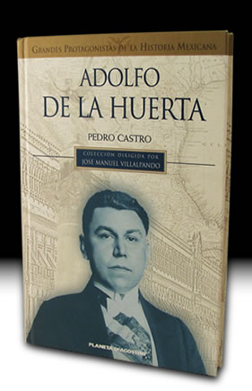

- Inicio
- Publicaciones
- Álvaro Obregón fuego y cenizas de la Revolución Mexicana
- Adolfo de la Huerta El desconocido de Roberto Guzmán Esparza
- A la Sombra de un Caudillovida y muerte del general Francisco R. Serrano
- Soto y Gamagenio y figura
- Adolfo de la Huerta Serie Grandes Protagonistas de la Historia Mexicana
- Historia del Agrarismo en México
- Ciudad Cuauhtémoc, Chihuahuacrónica de su fundación
- Adolfo de la Huerta: la integridad como arma de la revolución
- Adolfo de la Huerta y la Revolución Mexicana
- Fronteras Abiertasgeopolítica y expansionismo en Brasil contemporáneo
- Currículum

ISBN: 970-726-060-2
Editorial: Barcelona: Planeta D’Agostini. 2003 150pp., fotos, ilustraciones
Adolfo de la Huerta
Serie Grandes Protagonistas de la Historia Mexicana
Adolfo de la Huerta es uno de los pocos revolucionarios mexicanos que conservaron la dignidad y la honestidad aun en medio de las acechanzas y tentaciones del poder corrompido en que degeneró el movimiento social mexicano de 1910 a 1920. No solamente se enfrentó a los caudillos militares que se adueñaron de la presidencia de la república -Obregón y Calles-, en un intento por darle civilidad al gobierno, sino que además, fue la única voz que se levantó en contra de la ignominiosa entrega del país a Estados Unidos, auspiciada por el propio gobierno mexicano al firmar los tristemente célebres Tratados de Bucareli. El tránsito de Adolfo de la Huerta por la historia mexicana representa uno de los pocos momentos luminosos de nuestro pasado, en donde brillan las cualidades de un hombre honrado y digno, calificativos que lo distinguen entre la abrumadora mayoría de mediocridades en que fue pródigo nuestro siglo XX.
Réplicas y consultas con el autor: pedrocastro3131@gmail.com
Índice
- Un revolucionario en ascenso
- Un breve ejercicio presidencial
- El Tratado De la Huerta-Lamont
- El camino a la contienda
- La rebelión sin porvenir
- Las últimas batallas del viejo rebelde